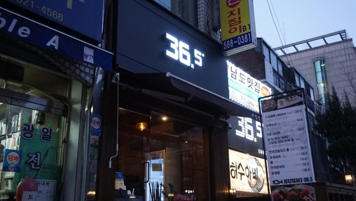
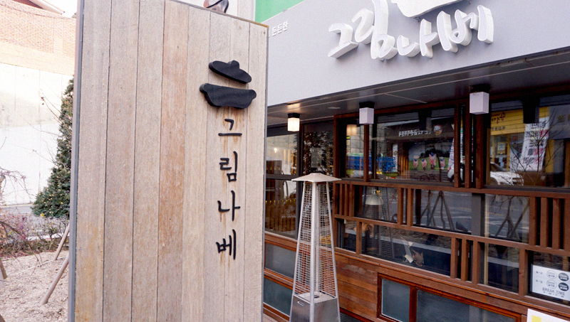
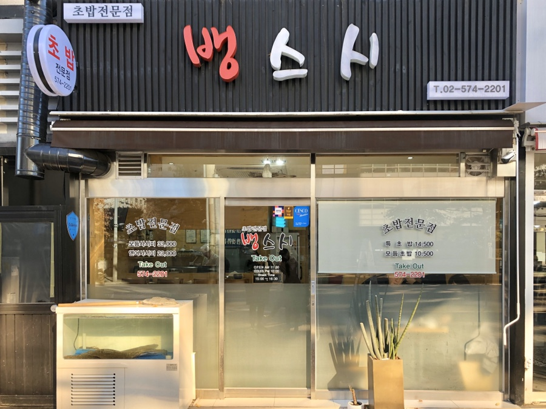
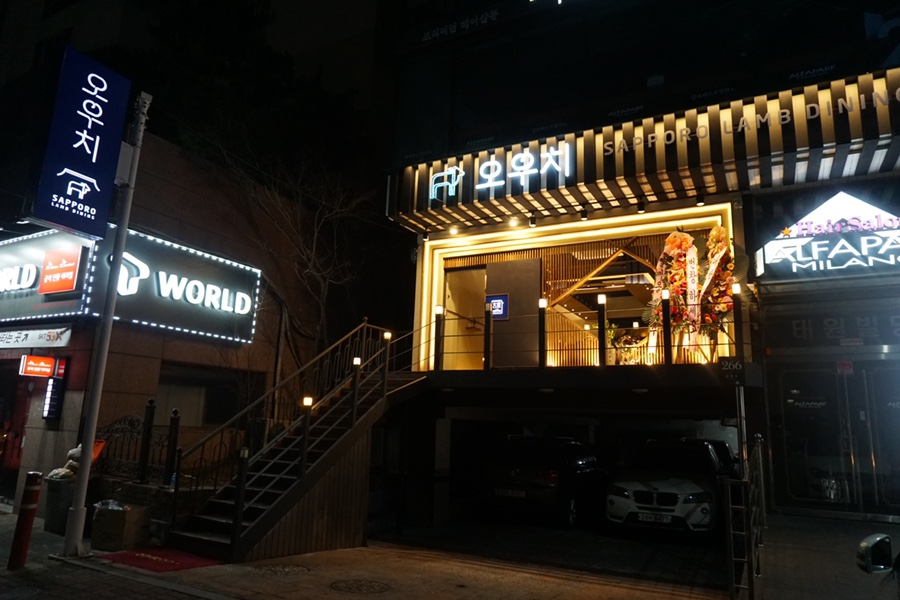

|  |
스시 36.5
📞02-586-7001 🚩서울 서초구 효령로 307 🕒 매일 11:30 - 22:00 🍴 스시세트: 20,000원 |
|  |
그림나베
📞02-522-5188 🚩서울 서초구 서초중앙로 42 🕒 평일 11:00 - 22:30 🍴 스키야끼수: 32,000원 |
|  |
뱅스시
📞02-574-2201 🚩서울 서초구 반포대로10길 35 🕒 매일 11:30 - 22:00 🍴 모듬초잡(11ps): 15,000원 |
|  |
오우치
📞02-6013-8545 🚩서울 서초구 효령로 266 🕒평일 17:00 - 24:00 | Last order - 23:00 🍴 양살치살(호주산) 150g: 25,000원 |